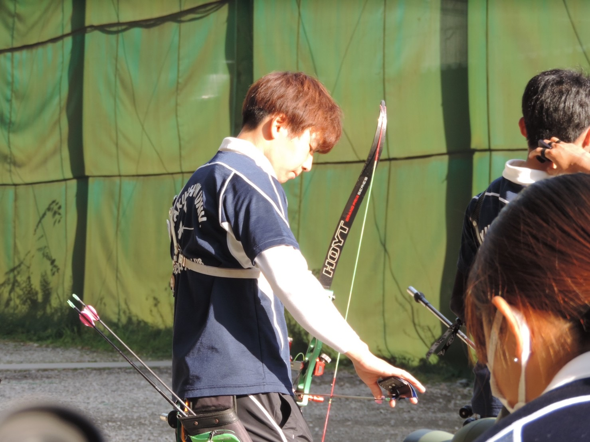
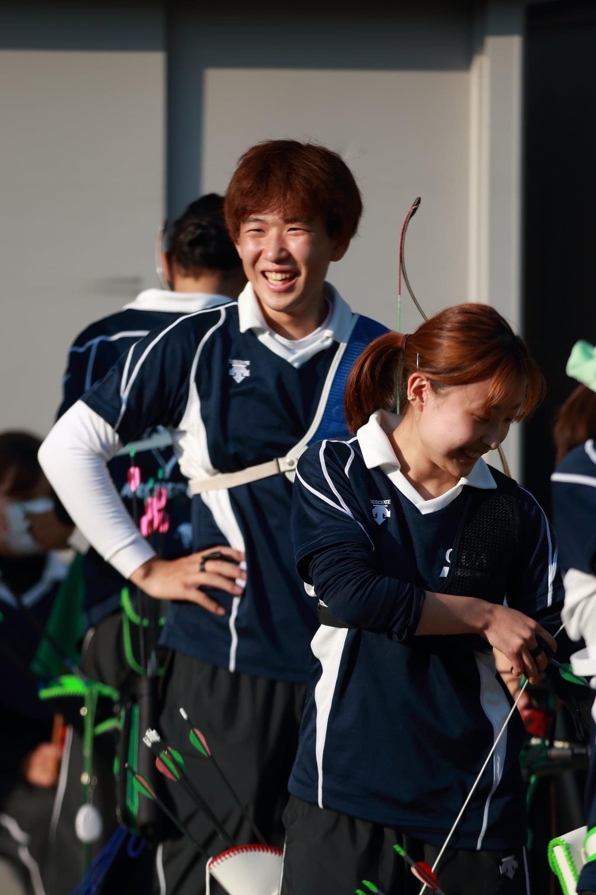

経営学科のいいところは必修がないことです！自分の好きなように授業を選択できるため自分の興味があるものを中心に授業を組むことができます。履修のアドバイスは二年生からB群をたくさん取ることができるため、A群を多く取ることです。
アーチェリーは高校から始めました！弓のカッコよさにひかれたのと新しくスポーツを始めたかったのですが、運動神経がよくないためランニングなど基礎体力が必要ないためです！大学では知っている先輩が多かったのとなにより先輩が優しい！！運動部のイメージに合った硬くて先輩と話せないみたいなことがなく、めっちゃ仲良くしてくれます！さらにはコーチ陣がとてもやさしいです！夏にはかき氷を作ってくれたり、練習終わりに焼肉などに連れて行ってくださいました！コーチもふくめた部活全体の仲の良さが魅力だと思います！
去年はオンラインの授業が中心で、ZOOM自体も少なかったため練習ができない夜21:00ごろからオンデマンド授業に取り組んでいました。射場が朝の八時から夜の八時まで空いており、自分の好きな時間にうてるため他の部活より両立はさせやすいです！
射場が常に開いており、いつでも練習できることです！練習時間など自分の気分などで調整できるため朝頑張って起きなくていいところが特に（笑）更に射場にだれかしらいるので人とたくさん喋れるところです。オンライン授業が多く、人と喋る機会が少なかったのでとてもうれしかったです！
なんといってもカラーリングですね。自分の好きな色である赤と緑でそろえています！アーチェリーは自分の弓の部品などを自分で完全に選ぶことができるので自分好みの弓が作れるのではないでしょうか。自分で作り上げたと思うと組み立てるときもテンションが上がります！
バイトは週に三回から五回です。暇な時間があまり好きではないので部活がない時はほとんどバイト入れてます（笑）
授業の時も書いたように自分の練習したいときに射場に行けばいいのでバイトとの両立もしやすいです！またバイト先がアーチェリー部が三人いるため店長も部活の事情を理解してくれていて、シフトを柔軟に決めてくれるのでたくさん入れて助かっています！
四月バイト先を探していたときに、面接で落とされまくっちゃいまして、、、、そんな時にアーチェリー部の先輩にバイトを紹介していただき今でもお世話になっています！バイト先の勧誘もしていいですか？あ、だめ？ﾘｮｳｶｲﾃﾞｽ)
基本的に外に出たい人なのでなにかしらで外に出ています（笑）ほんとに何もない日は、家にいそうな人と一日中電話しながらゲームとかしてます。あと自粛期間中はダイエットにはまりまして、ランニングしたりその日の栄養計算ずっとしてました。今はやめちゃってリバウンド気味なんですけど（笑）
基本的にzoomでなければ当日中に受けるようにしていました。選択した授業がオンデマンドが多かったので練習終わりの帰り道に動画を見て消化していました。
pcは一応ノートパソコンも持っているのですが学校で受けることがほとんどなかったので全く使いませんでした。その代わりデスクトップのガレリアにはたくさん助けられました。ゲームや動画編集などもできるので高いけど持っていると便利かもしれません。基本的にファイルのダウンロードとワード当たりが使えればいいので低スペックでも大丈夫だと思います。電源は長持ちした方がいいかも！！
友達ができない！！zoomでも生徒同士が話す機会がなく交流が部活以外全くありませんでした（泣）体育か語学は友達ができやすいと聞いたので取ってみるといいかもしれません。あとは部活やサークルに入るのがおすすめです！学科の情報などを共有できたのはとても大きかったです。
新入生の皆さん、ご入学おめでとうございます！！そして最後まで見ていただきありがとうございます。これから大学生活が始まりますが、あっという間に一年間終わります！ほんとにあっという間です！学業に専念するのも、部活を頑張るも、バイトで稼ぐも、趣味を極めるもなんだってできます！もし少しでもアーチェリーというスポーツに興味がありましたらDMなどご連絡お待ちしております！！（履修相談なども受け付けておりますので是非）